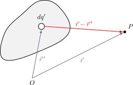
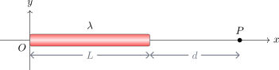

Distribución de Carga#
En casos donde la carga no es puntual sino que se distribuye en un volumen, superficie o línea, el campo eléctrico en el punto \(P\) se calcula mediante una integración sobre toda la distribución:
{kind=link}

Guía rápida: ¿Cuál densidad utilizar?#
En la resolución de problemas de ingeniería, identificar la geometría es el primer paso para plantear la integral de campo eléctrico.
Dimensión |
Tipo de Densidad |
Símbolo |
Geometrías Comunes |
Diferencial de carga (\(dq'\)) |
|---|---|---|---|---|
1D |
Lineal |
\(\lambda\) |
Hilos, anillos, varillas delgadas. |
\(dq' = \lambda dl\) |
2D |
Superficial |
\(\sigma\) |
Discos, láminas, cáscaras esféricas. |
\(dq' = \sigma ds\) |
3D |
Volumétrica |
\(\rho\) |
Esferas sólidas, cilindros macizos. |
\(dq' = \rho dV\) |
💡 Consejo para el cálculo: Recuerda que si la carga está distribuida de manera uniforme, puedes calcular la densidad como la carga total dividida por la longitud, área o volumen total (\(Q/L\), \(Q/A\) o \(Q/V\)).
Problema: Campo eléctrico generado por una barra uniforme#
Una barra uniforme de largo \(L\) y densidad de carga lineal \(\lambda\) se encuentra ubicada en el eje horizontal. Se desea calcular el campo eléctrico \(\vec{E}\) que esta barra ejerce sobre un punto \(P\) ubicado a una distancia \(d\) de uno de sus extremos, como se indica en la figura.
{kind=link}

Show code cell source
from IPython.display import display, HTML
quiz_html_barra = """
<style>
.fisi-quiz-container {
border: 1px solid #e0e0e0;
padding: 15px;
margin-bottom: 25px;
border-radius: 8px;
background-color: #f8f9fa;
font-family: -apple-system, BlinkMacSystemFont, "Segoe UI", Roboto, Arial, sans-serif;
}
.fisi-question {
font-weight: 600;
margin-bottom: 15px;
color: #2c3e50;
}
.fisi-option {
margin-bottom: 10px;
display: flex;
align-items: flex-start;
cursor: pointer;
}
.fisi-option input {
margin-top: 4px;
margin-right: 10px;
}
.fisi-check-btn {
background-color: #007bff;
color: white;
border: none;
padding: 8px 20px;
border-radius: 4px;
cursor: pointer;
font-size: 14px;
margin-top: 10px;
font-weight: 500;
}
.fisi-check-btn:hover { background-color: #0056b3; }
.fisi-feedback {
margin-top: 15px;
padding: 12px;
border-radius: 6px;
display: none;
font-size: 0.95em;
}
</style>
<h3>Preguntas de Comprensión:</h3>
<p>Estas preguntas están diseñadas para evaluar la comprensión de los conceptos fundamentales necesarios para abordar el problema del campo eléctrico sobre un punto en el espacio debido a una barra cargada.</p>
<div class="fisi-quiz-container" id="quiz-bar-1">
<div class="fisi-question">
1. ¿Cómo se define el elemento diferencial de carga <i>dq'</i> para una barra con densidad de carga lineal uniforme λ y un elemento de longitud <i>dx</i>?
</div>
<label class="fisi-option">
<input type="radio" name="qb1" value="a" data-fb="Incorrecto. La densidad lineal es carga por unidad de longitud. Al dividir por longitud, no obtienes carga.">
<span><i>dq'</i> = λ / <i>dx</i></span>
</label>
<label class="fisi-option">
<input type="radio" name="qb1" value="b" data-correct="true" data-fb="¡Correcto! La carga es el producto de la densidad de carga (carga/longitud) por la longitud del elemento infinitesimal.">
<span><i>dq'</i> = λ · <i>dx</i></span>
</label>
<label class="fisi-option">
<input type="radio" name="qb1" value="c" data-fb="Incorrecto. Dimensionalmente no es posible sumar una densidad de carga con una longitud.">
<span><i>dq'</i> = λ + <i>dx</i></span>
</label>
<label class="fisi-option">
<input type="radio" name="qb1" value="d" data-fb="Incorrecto. Dimensionalmente no es posible restar una longitud a una densidad de carga.">
<span><i>dq'</i> = λ - <i>dx</i></span>
</label>
<button class="fisi-check-btn" id="btn-check-b1">Comprobar</button>
<div class="fisi-feedback" id="feedback-b1"></div>
</div>
<div class="fisi-quiz-container" id="quiz-bar-2">
<div class="fisi-question">
2. Si la barra se extiende desde <i>x</i> = 0 hasta <i>x</i> = <i>L</i>, y el punto <i>P</i> se encuentra en <i>x</i> = <i>L</i> + <i>d</i>, ¿cuál es el vector de posición <b>r</b>' de un elemento infinitesimal de carga <i>dq'</i> ubicado en un punto genérico <i>x</i> de la barra?
</div>
<label class="fisi-option">
<input type="radio" name="qb2" value="a" data-fb="Incorrecto. Ese es el vector de posición del punto <i>P</i>, no de la fuente.">
<span><b>r</b>' = (<i>L</i> + <i>d</i>)<b>î</b></span>
</label>
<label class="fisi-option">
<input type="radio" name="qb2" value="b" data-correct="true" data-fb="¡Correcto! El vector primado siempre apunta a la fuente que genera el campo. Como tomamos un diferencial en la posición <i>x</i>, el vector es simplemente <i>x</i><b>î</b>.">
<span><b>r</b>' = <i>x</i><b>î</b></span>
</label>
<label class="fisi-option">
<input type="radio" name="qb2" value="c" data-fb="Incorrecto. Esa expresión representa la distancia relativa entre un punto de la barra y el punto <i>P</i>.">
<span><b>r</b>' = (<i>L</i> + <i>d</i> - <i>x</i>)<b>î</b></span>
</label>
<label class="fisi-option">
<input type="radio" name="qb2" value="d" data-fb="Incorrecto. Esa es solo la distancia entre el final de la barra y el punto <i>P</i>.">
<span><b>r</b>' = <i>d</i><b>î</b></span>
</label>
<button class="fisi-check-btn" id="btn-check-b2">Comprobar</button>
<div class="fisi-feedback" id="feedback-b2"></div>
</div>
<div class="fisi-quiz-container" id="quiz-bar-3">
<div class="fisi-question">
3. ¿Cuál es el vector de posición <b>r</b> del punto <i>P</i> en el sistema de coordenadas definido?
</div>
<label class="fisi-option">
<input type="radio" name="qb3" value="a" data-fb="Incorrecto. Ese es el vector que apunta a un elemento de la barra (la fuente).">
<span><b>r</b> = <i>x</i><b>î</b></span>
</label>
<label class="fisi-option">
<input type="radio" name="qb3" value="b" data-correct="true" data-fb="¡Exacto! El vector sin primar apunta al punto de observación, que según el enunciado se ubica en <i>L</i> + <i>d</i>.">
<span><b>r</b> = (<i>L</i> + <i>d</i>)<b>î</b></span>
</label>
<label class="fisi-option">
<input type="radio" name="qb3" value="c" data-fb="Incorrecto. Esta sería la diferencia entre el punto de observación y la fuente.">
<span><b>r</b> = (<i>L</i> + <i>d</i> - <i>x</i>)<b>î</b></span>
</label>
<label class="fisi-option">
<input type="radio" name="qb3" value="d" data-fb="Incorrecto. La carga se encuentra a una distancia <i>d</i> del final de la barra, no del origen.">
<span><b>r</b> = <i>d</i><b>î</b></span>
</label>
<button class="fisi-check-btn" id="btn-check-b3">Comprobar</button>
<div class="fisi-feedback" id="feedback-b3"></div>
</div>
<div class="fisi-quiz-container" id="quiz-bar-4">
<div class="fisi-question">
4. ¿Cuál es la expresión del vector (<b>r</b> - <b>r</b>') que conecta el elemento de carga <i>dq'</i> con el punto <i>P</i>?
</div>
<label class="fisi-option">
<input type="radio" name="qb4" value="a" data-fb="Incorrecto. Revisa los signos al realizar la resta vectorial.">
<span>(<i>L</i> + <i>d</i> + <i>x</i>)<b>î</b></span>
</label>
<label class="fisi-option">
<input type="radio" name="qb4" value="b" data-fb="Incorrecto. Recuerda que <b>r</b> apunta a <i>L</i>+<i>d</i> y <b>r</b>' apunta a <i>x</i>.">
<span>(<i>L</i> - <i>d</i> - <i>x</i>)<b>î</b></span>
</label>
<label class="fisi-option">
<input type="radio" name="qb4" value="c" data-correct="true" data-fb="¡Correcto! Simplemente restamos el vector fuente del vector de observación: (<i>L</i> + <i>d</i>)<b>î</b> - <i>x</i><b>î</b>.">
<span>(<i>L</i> + <i>d</i> - <i>x</i>)<b>î</b></span>
</label>
<label class="fisi-option">
<input type="radio" name="qb4" value="d" data-fb="Incorrecto. Eso representaría un vector que apunta desde la carga hacia la barra (<b>r</b>' - <b>r</b>).">
<span>(<i>x</i> - (<i>L</i> + <i>d</i>))<b>î</b></span>
</label>
<button class="fisi-check-btn" id="btn-check-b4">Comprobar</button>
<div class="fisi-feedback" id="feedback-b4"></div>
</div>
<div class="fisi-quiz-container" id="quiz-bar-5">
<div class="fisi-question">
5. El campo eléctrico sobre el punto <i>P</i> será el resultado de la integración de las contribuciones de todos los elementos <i>dq'</i>. ¿Entre qué límites se debe realizar la integral para abarcar toda la longitud de la barra?
</div>
<label class="fisi-option">
<input type="radio" name="qb5" value="a" data-fb="Incorrecto. La distancia <i>d</i> es donde empieza el vacío hasta el punto <i>P</i>, no la barra misma.">
<span>De 0 a <i>d</i></span>
</label>
<label class="fisi-option">
<input type="radio" name="qb5" value="b" data-fb="Incorrecto. La barra no se ubica en ese segmento del eje.">
<span>De <i>d</i> a <i>L</i> + <i>d</i></span>
</label>
<label class="fisi-option">
<input type="radio" name="qb5" value="c" data-correct="true" data-fb="¡Muy bien! Estás integrando sobre los elementos de la fuente (la barra), que según el enunciado se extiende desde el origen (0) hasta una longitud <i>L</i>.">
<span>De 0 a <i>L</i></span>
</label>
<label class="fisi-option">
<input type="radio" name="qb5" value="d" data-fb="Incorrecto. Ese sería el segmento vacío entre la barra y el punto <i>P</i>.">
<span>De <i>L</i> a <i>L</i> + <i>d</i></span>
</label>
<button class="fisi-check-btn" id="btn-check-b5">Comprobar</button>
<div class="fisi-feedback" id="feedback-b5"></div>
</div>
<script>
(function() {
function setupQuiz(btnId, radioName, feedbackId) {
var btn = document.getElementById(btnId);
if (!btn) return;
btn.addEventListener('click', function() {
var radios = document.getElementsByName(radioName);
var selected = null;
var feedbackDiv = document.getElementById(feedbackId);
for (var i = 0; i < radios.length; i++) {
if (radios[i].checked) {
selected = radios[i];
break;
}
}
feedbackDiv.style.display = 'block';
if (!selected) {
feedbackDiv.style.backgroundColor = '#fff3cd';
feedbackDiv.style.color = '#856404';
feedbackDiv.style.border = '1px solid #ffeeba';
feedbackDiv.innerHTML = '⚠️ Por favor, selecciona una opción.';
return;
}
var isCorrect = selected.getAttribute('data-correct') === 'true';
var msg = selected.getAttribute('data-fb');
if (isCorrect) {
feedbackDiv.style.backgroundColor = '#d4edda';
feedbackDiv.style.color = '#155724';
feedbackDiv.style.border = '1px solid #c3e6cb';
feedbackDiv.innerHTML = '✅ <strong>¡Correcto!</strong><br>' + msg;
} else {
feedbackDiv.style.backgroundColor = '#f8d7da';
feedbackDiv.style.color = '#721c24';
feedbackDiv.style.border = '1px solid #f5c6cb';
feedbackDiv.innerHTML = '❌ <strong>Incorrecto.</strong><br>' + msg;
}
});
}
setTimeout(function() {
setupQuiz('btn-check-b1', 'qb1', 'feedback-b1');
setupQuiz('btn-check-b2', 'qb2', 'feedback-b2');
setupQuiz('btn-check-b3', 'qb3', 'feedback-b3');
setupQuiz('btn-check-b4', 'qb4', 'feedback-b4');
setupQuiz('btn-check-b5', 'qb5', 'feedback-b5');
}, 500);
})();
</script>
"""
display(HTML(quiz_html_barra))
Preguntas de Comprensión:
Estas preguntas están diseñadas para evaluar la comprensión de los conceptos fundamentales necesarios para abordar el problema del campo eléctrico sobre un punto en el espacio debido a una barra cargada.
Show code cell source
from IPython.display import display, HTML
simulacion_superposicion_html = """
<div style="border: 1px solid #e0e0e0; padding: 20px; border-radius: 8px; background-color: #f8f9fa; font-family: -apple-system, BlinkMacSystemFont, 'Segoe UI', Roboto, Arial, sans-serif;">
<h3 style="margin-top:0; color: #2c3e50;">Simulación: Integración del Campo Eléctrico (Barra Cargada)</h3>
<div style="display: flex; gap: 20px; flex-wrap: wrap; margin-bottom: 15px;">
<div style="flex: 1; min-width: 200px;">
<div style="margin-bottom: 8px;">
<label style="font-weight: 600; display: inline-block; width: 110px;">Posición Px: <span id="bar_val_x" style="font-weight: normal;">1.0</span></label>
<input type="range" id="bar_slider_x" min="-3" max="5" step="0.1" value="2.5" style="width: 50%; vertical-align: middle;">
</div>
<div>
<label style="font-weight: 600; display: inline-block; width: 110px;">Posición Py: <span id="bar_val_y" style="font-weight: normal;">2.0</span></label>
<input type="range" id="bar_slider_y" min="-3" max="3" step="0.1" value="0.0" style="width: 50%; vertical-align: middle;">
</div>
</div>
<div style="flex: 1; min-width: 220px;">
<div style="margin-bottom: 8px;">
<label style="font-weight: 600; display: inline-block; width: 130px;">Nº Segmentos: <span id="bar_val_n" style="font-weight: normal;">20</span></label>
<input type="range" id="bar_slider_n" min="10" max="100" step="10" value="20" style="width: 40%; vertical-align: middle;">
</div>
<div style="margin-bottom: 8px;">
<label style="font-weight: 600; display: inline-block; width: 130px;">Elemento dx': <span id="bar_val_idx" style="font-weight: normal;">0</span></label>
<input type="range" id="bar_slider_idx" min="0" max="19" step="1" value="0" style="width: 40%; vertical-align: middle;">
</div>
<div>
<label style="font-weight: 600; display: inline-block; width: 130px; color: #dc3545;">Lupa dE (Rojo): <span id="bar_val_mag" style="font-weight: normal;">1x</span></label>
<input type="range" id="bar_slider_mag" min="1" max="30" step="1" value="1" style="width: 40%; vertical-align: middle;">
</div>
</div>
<div style="flex: 1; min-width: 250px; font-size: 0.9em;">
<label style="display: block; cursor: pointer; color: #dc3545; font-weight: bold;">
<input type="checkbox" id="chk_dE" checked> Mostrar dE actual (Rojo)
</label>
<label style="display: block; cursor: pointer; color: #198754; font-weight: bold; margin-top: 5px;">
<input type="checkbox" id="chk_Eac" checked> Mostrar E acumulado (Verde)
</label>
<label style="display: block; cursor: pointer; color: #000000; font-weight: bold; margin-top: 5px;">
<input type="checkbox" id="chk_Etot" checked> Mostrar E total final (Negro)
</label>
</div>
</div>
<div style="text-align: center; position: relative;">
<canvas id="bar_canvas" width="800" height="500" style="background: white; border: 1px solid #ccc; border-radius: 4px; box-shadow: 0 2px 5px rgba(0,0,0,0.05); max-width: 100%;"></canvas>
<div id="bar_intensity" style="position: absolute; top: 10px; right: 20px; background: rgba(255,255,255,0.8); padding: 5px 10px; border-radius: 4px; border: 1px solid #ccc; font-weight: bold;">
Intensidad Total: --- N/C
</div>
</div>
</div>
<script>
(function() {
const canvas = document.getElementById('bar_canvas');
const ctx = canvas.getContext('2d');
// Elementos UI
const slider_x = document.getElementById('bar_slider_x');
const slider_y = document.getElementById('bar_slider_y');
const slider_n = document.getElementById('bar_slider_n');
const slider_idx = document.getElementById('bar_slider_idx');
const slider_mag = document.getElementById('bar_slider_mag');
const val_x = document.getElementById('bar_val_x');
const val_y = document.getElementById('bar_val_y');
const val_n = document.getElementById('bar_val_n');
const val_idx = document.getElementById('bar_val_idx');
const val_mag = document.getElementById('bar_val_mag');
const intensity_div = document.getElementById('bar_intensity');
const chk_dE = document.getElementById('chk_dE');
const chk_Eac = document.getElementById('chk_Eac');
const chk_Etot = document.getElementById('chk_Etot');
// Constantes Físicas
const k = 8.99e9;
const lam = 1e-6; // 1 uC/m
const bar_L = 2.0;
// Sistema de coordenadas (100 pixeles por metro asegura proporción 1:1)
const x_min = -3.0, x_max = 5.0;
const y_min = -2.5, y_max = 2.5;
function mapX(x) { return ((x - x_min) / (x_max - x_min)) * canvas.width; }
function mapY(y) { return canvas.height - ((y - y_min) / (y_max - y_min)) * canvas.height; }
function mapDist(d) { return (d / (x_max - x_min)) * canvas.width; }
function drawArrow(fromx, fromy, tox, toy, color, width, dashed=false) {
ctx.beginPath();
if(dashed) ctx.setLineDash([5, 5]);
else ctx.setLineDash([]);
ctx.moveTo(fromx, fromy);
ctx.lineTo(tox, toy);
ctx.strokeStyle = color;
ctx.lineWidth = width;
ctx.stroke();
// Dibujar cabeza de flecha
let angle = Math.atan2(toy - fromy, tox - fromx);
// Evitar dibujar cabeza si la flecha es un punto
let dist = Math.hypot(tox - fromx, toy - fromy);
if (dist < 2) return;
let headlen = 12;
ctx.beginPath();
ctx.setLineDash([]);
ctx.moveTo(tox, toy);
ctx.lineTo(tox - headlen * Math.cos(angle - Math.PI/6), toy - headlen * Math.sin(angle - Math.PI/6));
ctx.lineTo(tox - headlen * Math.cos(angle + Math.PI/6), toy - headlen * Math.sin(angle + Math.PI/6));
ctx.lineTo(tox, toy);
ctx.fillStyle = color;
ctx.fill();
}
function updateSim() {
let n_seg = parseInt(slider_n.value);
slider_idx.max = n_seg - 1;
if(parseInt(slider_idx.value) >= n_seg) {
slider_idx.value = n_seg - 1;
}
let px = parseFloat(slider_x.value);
let py = parseFloat(slider_y.value);
let idx = parseInt(slider_idx.value);
let mag_red = parseFloat(slider_mag.value);
val_x.innerText = px.toFixed(1) + " m";
val_y.innerText = py.toFixed(1) + " m";
val_n.innerText = n_seg;
val_idx.innerText = idx;
val_mag.innerText = mag_red + "x";
ctx.clearRect(0, 0, canvas.width, canvas.height);
// Dibujar grilla suave
ctx.strokeStyle = '#e0e0e0';
ctx.lineWidth = 1;
ctx.beginPath();
for(let i=Math.ceil(x_min); i<=Math.floor(x_max); i++) {
ctx.moveTo(mapX(i), 0); ctx.lineTo(mapX(i), canvas.height);
}
for(let i=Math.ceil(y_min); i<=Math.floor(y_max); i++) {
ctx.moveTo(0, mapY(i)); ctx.lineTo(canvas.width, mapY(i));
}
ctx.stroke();
// Matemática
let dx = bar_L / n_seg;
let E_tot_x = 0, E_tot_y = 0;
let E_ac_x = 0, E_ac_y = 0;
let dE_act_x = 0, dE_act_y = 0;
for(let i = 0; i < n_seg; i++) {
let x_prime = (i + 0.5) * dx;
let rx = px - x_prime;
let ry = py - 0;
let r2 = rx*rx + ry*ry;
if (r2 < 0.01) r2 = 0.01;
let r3 = Math.pow(r2, 1.5);
let dEx = k * lam * dx * rx / r3;
let dEy = k * lam * dx * ry / r3;
E_tot_x += dEx;
E_tot_y += dEy;
if(i <= idx) {
E_ac_x += dEx;
E_ac_y += dEy;
}
if(i === idx) {
dE_act_x = dEx; // Tamaño real del diferencial
dE_act_y = dEy;
}
}
let mag_tot = Math.sqrt(E_tot_x*E_tot_x + E_tot_y*E_tot_y);
intensity_div.innerText = "Intensidad Total: " + mag_tot.toExponential(2) + " N/C";
// Dibujar Barra Gris
ctx.fillStyle = '#d3d3d3';
ctx.fillRect(mapX(0), mapY(0.1), mapDist(bar_L), mapDist(0.2));
// Dibujar Área Verde
let w_acumulado = (idx + 1) * dx;
ctx.fillStyle = 'rgba(40, 167, 69, 0.4)';
ctx.fillRect(mapX(0), mapY(0.1), mapDist(w_acumulado), mapDist(0.2));
// Dibujar Segmento Rojo
let x_actual = idx * dx;
ctx.fillStyle = '#dc3545';
ctx.fillRect(mapX(x_actual), mapY(0.1), mapDist(dx), mapDist(0.2));
// Dibujar Punto P
let canvas_px = mapX(px);
let canvas_py = mapY(py);
ctx.beginPath();
ctx.arc(canvas_px, canvas_py, 6, 0, 2 * Math.PI);
ctx.fillStyle = 'black';
ctx.fill();
ctx.font = "bold 16px Arial";
ctx.fillText("P", canvas_px + 10, canvas_py - 10);
// Base length para normalizar la visualización (El vector total siempre mide 120px)
let base_length_px = 120;
let visual_scale = base_length_px / Math.max(mag_tot, 1e-9);
// Dibujar Vectores
if(chk_Etot.checked) {
drawArrow(canvas_px, canvas_py,
canvas_px + E_tot_x * visual_scale,
canvas_py - E_tot_y * visual_scale,
'black', 3, true);
}
if(chk_Eac.checked) {
drawArrow(canvas_px, canvas_py,
canvas_px + E_ac_x * visual_scale,
canvas_py - E_ac_y * visual_scale,
'#198754', 4, false);
}
if(chk_dE.checked) {
// Vector rojo con su tamaño real multiplicado SÓLO por la lupa del usuario
drawArrow(canvas_px, canvas_py,
canvas_px + (dE_act_x * visual_scale * mag_red),
canvas_py - (dE_act_y * visual_scale * mag_red),
'#dc3545', 3, false);
}
}
// Event Listeners
slider_x.addEventListener('input', updateSim);
slider_y.addEventListener('input', updateSim);
slider_n.addEventListener('input', updateSim);
slider_idx.addEventListener('input', updateSim);
slider_mag.addEventListener('input', updateSim);
chk_dE.addEventListener('change', updateSim);
chk_Eac.addEventListener('change', updateSim);
chk_Etot.addEventListener('change', updateSim);
// Iniciar
updateSim();
})();
</script>
"""
display(HTML(simulacion_superposicion_html))
Simulación: Integración del Campo Eléctrico (Barra Cargada)
📝 Resolución Analítica: Campo Eléctrico de una Barra Cargada#
A continuación, formalizaremos matemáticamente el problema que acabamos de analizar. Nuestro objetivo es calcular el campo eléctrico \(\vec{E}\) sobre un punto \(P\) ubicado a una distancia \(d\) del extremo derecho de una barra cargada uniformemente.
1. Identificación de los Vectores y Diferenciales#
De acuerdo con nuestro sistema de referencia, la barra se encuentra sobre el eje \(x\), comenzando en el origen (\(x=0\)) y terminando en \(x=L\). La carga puntual se ubica en \(x = L+d\).
Rescatando las respuestas de nuestro análisis previo:
Diferencial de carga de la fuente: \(dq' = \lambda dx\)
Vector de posición de la fuente: \(\vec{r}' = x\hat{\imath}\)
Vector de posición de observación: \(\vec{r} = (L+d)\hat{\imath}\)
Vector diferencia (distancia relativa): \(\vec{r} - \vec{r}' = (L+d-x)\hat{\imath}\)
2. Planteamiento de la Integral#
Partimos de la definición general para el campo eléctrico generado por una distribución continua:
Reemplazamos nuestros términos específicos:
Simplificando el exponente, obtenemos la expresión a integrar. Como la barra va de \(x=0\) a \(x=L\), esos serán nuestros límites de integración:
3. Resolución Matemática#
Para resolver la integral, podemos hacer una sustitución simple. Sea \(u = L+d-x\), entonces \(du = -dx\). Los límites cambian: si \(x=0 \rightarrow u=L+d\); si \(x=L \rightarrow u=d\).
Integramos aplicando la regla de la potencia:
Si operamos las fracciones algebraicamente para tener un denominador común:
4. Resultado Final del Campo Eléctrico#
Sustituyendo el resultado de la integral en nuestra ecuación del campo:
💡 Análisis físico: Nota que \(\lambda L\) es simplemente la carga total de la barra (\(Q\)). Por lo tanto, el campo también se puede escribir como \(\vec{E} = \frac{Q}{4\pi\epsilon_0 d(L+d)} \hat{\imath}\). Si nos alejamos mucho de la barra (\(d \gg L\)), el término \((L+d)\) se aproxima a \(d\), y la fórmula se reduce a \(\frac{Q}{4\pi\epsilon_0 d^2}\), ¡exactamente el campo de una carga puntual!
Show code cell source
from IPython.display import display, HTML
quiz_analisis_barra_html = """
<style>
.fisi-quiz-container {
border: 1px solid #e0e0e0;
padding: 15px;
margin-bottom: 25px;
border-radius: 8px;
background-color: #f8f9fa;
font-family: -apple-system, BlinkMacSystemFont, "Segoe UI", Roboto, Arial, sans-serif;
}
.fisi-question {
font-weight: 600;
margin-bottom: 15px;
color: #2c3e50;
}
.fisi-option {
margin-bottom: 10px;
display: flex;
align-items: flex-start;
cursor: pointer;
}
.fisi-option input {
margin-top: 4px;
margin-right: 10px;
}
.fisi-check-btn {
background-color: #007bff;
color: white;
border: none;
padding: 8px 20px;
border-radius: 4px;
cursor: pointer;
font-size: 14px;
margin-top: 10px;
font-weight: 500;
}
.fisi-check-btn:hover { background-color: #0056b3; }
.fisi-feedback {
margin-top: 15px;
padding: 12px;
border-radius: 6px;
display: none;
font-size: 0.95em;
}
</style>
<h3>Análisis de la Resolución: Barra Cargada</h3>
<p>Verifica tu comprensión de los pasos matemáticos y el significado físico de la fórmula obtenida.</p>
<div class="fisi-quiz-container" id="quiz-barra-ana-1">
<div class="fisi-question">
1. Durante el cálculo de la integral, se realiza el cambio de variable <i>u</i> = <i>L</i> + <i>d</i> - <i>x</i>. ¿Por qué los límites de integración cambian de [0, <i>L</i>] a [<i>L</i>+<i>d</i>, <i>d</i>]?
</div>
<label class="fisi-option">
<input type="radio" name="qba1" value="a" data-fb="Incorrecto. El signo del diferencial afecta a la función a integrar, pero los límites cambian por una simple evaluación algebraica.">
<span>Porque el diferencial <i>du</i> = -<i>dx</i> introduce un signo negativo que invierte automáticamente el sentido geométrico.</span>
</label>
<label class="fisi-option">
<input type="radio" name="qba1" value="b" data-correct="true" data-fb="¡Correcto! Es una evaluación directa de la nueva variable: cuando <i>x</i>=0, <i>u</i> = <i>L</i>+<i>d</i>-0 = <i>L</i>+<i>d</i>. Cuando <i>x</i>=<i>L</i>, <i>u</i> = <i>L</i>+<i>d</i>-<i>L</i> = <i>d</i>.">
<span>Al evaluar el límite inferior (<i>x</i>=0) en la ecuación de <i>u</i> se obtiene <i>L</i>+<i>d</i>, y al evaluar el límite superior (<i>x</i>=<i>L</i>) se obtiene <i>d</i>.</span>
</label>
<label class="fisi-option">
<input type="radio" name="qba1" value="c" data-fb="Incorrecto. Los límites de integración están dictados estrictamente por la ubicación de la barra, no de la carga de prueba.">
<span>Porque ahora estamos integrando desde la posición de la carga puntual hacia la barra.</span>
</label>
<button class="fisi-check-btn" id="btn-check-ba1">Comprobar</button>
<div class="fisi-feedback" id="feedback-ba1"></div>
</div>
<div class="fisi-quiz-container" id="quiz-barra-ana-2">
<div class="fisi-question">
2. En el resultado final del campo eléctrico, aparece el término λ<i>L</i> en el numerador. ¿Qué representa físicamente esta cantidad?
</div>
<label class="fisi-option">
<input type="radio" name="qba2" value="a" data-fb="Incorrecto. La densidad superficial se denota con σ y se asocia a áreas, no a longitudes.">
<span>La densidad superficial total de la barra.</span>
</label>
<label class="fisi-option">
<input type="radio" name="qba2" value="b" data-fb="Incorrecto. Es un valor constante, pero su significado físico es mucho más específico que una constante de proporcionalidad.">
<span>Una constante de integración adimensional.</span>
</label>
<label class="fisi-option">
<input type="radio" name="qba2" value="c" data-correct="true" data-fb="¡Exacto! Como λ es la carga por unidad de longitud (<i>Q/L</i>), al multiplicar por la longitud total (<i>L</i>), recuperamos la carga neta (<i>Q</i>) de la barra.">
<span>La carga total <i>Q</i> distribuida a lo largo de toda la barra.</span>
</label>
<button class="fisi-check-btn" id="btn-check-ba2">Comprobar</button>
<div class="fisi-feedback" id="feedback-ba2"></div>
</div>
<div class="fisi-quiz-container" id="quiz-barra-ana-3">
<div class="fisi-question">
3. El análisis físico menciona el caso límite donde la distancia <i>d</i> es muchísimo mayor que la longitud <i>L</i> (<i>d</i> ≫ <i>L</i>). ¿Qué nos enseña físicamente que la ecuación se reduzca a <i>E</i> = <i>Q</i> / (4πε₀ <i>d</i>²)?
</div>
<label class="fisi-option">
<input type="radio" name="qba3" value="a" data-correct="true" data-fb="¡Muy bien! Desde muy lejos, las dimensiones del objeto pierden importancia. La barra entera se comporta y se 've' eléctricamente como si fuera una sola carga puntual.">
<span>Que a grandes distancias, cualquier distribución finita de carga se percibe y se comporta como una simple carga puntual.</span>
</label>
<label class="fisi-option">
<input type="radio" name="qba3" value="b" data-fb="Incorrecto. Todo lo contrario; la fórmula nos demuestra que a gran distancia el campo decae siguiendo exactamente la ley del inverso del cuadrado (1/d²).">
<span>Que el campo eléctrico se vuelve constante e independiente de la distancia cuando nos alejamos lo suficiente.</span>
</label>
<label class="fisi-option">
<input type="radio" name="qba3" value="c" data-fb="Incorrecto. Aunque el campo disminuye drásticamente, matemáticamente nunca se hace cero absoluto, solo tiende asintóticamente a cero.">
<span>Que el campo eléctrico se anula por completo debido a la pérdida de influencia de la densidad λ.</span>
</label>
<button class="fisi-check-btn" id="btn-check-ba3">Comprobar</button>
<div class="fisi-feedback" id="feedback-ba3"></div>
</div>
<div class="fisi-quiz-container" id="quiz-barra-ana-4">
<div class="fisi-question">
4. Durante toda la resolución, el vector unitario <b>î</b> se mantiene constante y sale de la integral. ¿Qué implica esto sobre las componentes del campo eléctrico en el punto <i>P</i>?
</div>
<label class="fisi-option">
<input type="radio" name="qba4" value="a" data-fb="Incorrecto. Un campo nulo requeriría que la integral completa de cero o que haya otra carga cancelando el efecto.">
<span>Que el campo eléctrico neto en <i>P</i> es nulo.</span>
</label>
<label class="fisi-option">
<input type="radio" name="qba4" value="b" data-correct="true" data-fb="¡Exacto! Como el punto P está colineal a la barra en el eje X, todas las contribuciones diferenciales <i>d</i><b>E</b> empujan en la misma dirección horizontal, sin componentes en <i>Y</i> o <i>Z</i> que deban cancelarse o sumarse.">
<span>Que todas las contribuciones diferenciales apuntan exclusivamente en la misma dirección (eje X), por lo que la suma es directa y colineal.</span>
</label>
<label class="fisi-option">
<input type="radio" name="qba4" value="c" data-fb="Incorrecto. La presencia de un solo vector unitario (<b>î</b>) nos indica exactamente lo opuesto: no hay componente en Y (<b>ĵ</b>).">
<span>Que el campo tiene componentes tanto en el eje X como en el eje Y que deben calcularse por separado.</span>
</label>
<button class="fisi-check-btn" id="btn-check-ba4">Comprobar</button>
<div class="fisi-feedback" id="feedback-ba4"></div>
</div>
<script>
(function() {
function setupQuiz(btnId, radioName, feedbackId) {
var btn = document.getElementById(btnId);
if (!btn) return;
btn.addEventListener('click', function() {
var radios = document.getElementsByName(radioName);
var selected = null;
var feedbackDiv = document.getElementById(feedbackId);
for (var i = 0; i < radios.length; i++) {
if (radios[i].checked) {
selected = radios[i];
break;
}
}
feedbackDiv.style.display = 'block';
if (!selected) {
feedbackDiv.style.backgroundColor = '#fff3cd';
feedbackDiv.style.color = '#856404';
feedbackDiv.style.border = '1px solid #ffeeba';
feedbackDiv.innerHTML = '⚠️ Por favor, selecciona una opción.';
return;
}
var isCorrect = selected.getAttribute('data-correct') === 'true';
var msg = selected.getAttribute('data-fb');
if (isCorrect) {
feedbackDiv.style.backgroundColor = '#d4edda';
feedbackDiv.style.color = '#155724';
feedbackDiv.style.border = '1px solid #c3e6cb';
feedbackDiv.innerHTML = '✅ <strong>¡Correcto!</strong><br>' + msg;
} else {
feedbackDiv.style.backgroundColor = '#f8d7da';
feedbackDiv.style.color = '#721c24';
feedbackDiv.style.border = '1px solid #f5c6cb';
feedbackDiv.innerHTML = '❌ <strong>Incorrecto.</strong><br>' + msg;
}
});
}
setTimeout(function() {
setupQuiz('btn-check-ba1', 'qba1', 'feedback-ba1');
setupQuiz('btn-check-ba2', 'qba2', 'feedback-ba2');
setupQuiz('btn-check-ba3', 'qba3', 'feedback-ba3');
setupQuiz('btn-check-ba4', 'qba4', 'feedback-ba4');
}, 500);
})();
</script>
"""
display(HTML(quiz_analisis_barra_html))
Análisis de la Resolución: Barra Cargada
Verifica tu comprensión de los pasos matemáticos y el significado físico de la fórmula obtenida.